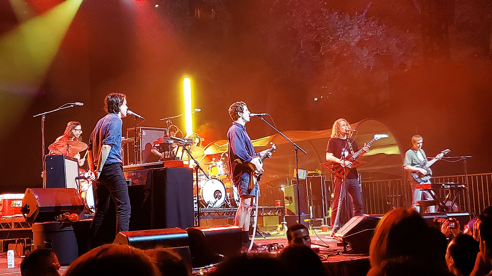

King Gizzard & the Lizard Wizard

Australian rock band King Gizzard and the Lizard Wizard was formed in 2010, releasing their first album, 12 Bar Blues, in late 2012. In the following years, they became known for their exploration across genres. Each album tends to have a genre that it sticks to. The band also famously experimented with microtonal music in 2017 (starting with, of course, the album Flying Microtonal Banana).
2017 marked their most active year, in terms of releases. From their first microtonal foray to a jazz collaboration with Mild High Club to a completely free-to-reproduce release, King Gizzard and the Lizard Wizard ended the year with five new studio albums. They received critical acclaim for both the quantity and the quality of these albums, each feeling unique. Their final album of the year (and my favorite), Gumboot Soup, consists of many songs that didn't fit into the other albums.
King Gizzard and the Lizard Wizard has continued rapidly releasing albums since then. They even tied their 2017 record by releasing five new studio albums in 2022. Their concerts are very successful, allowing them to frequently perform both domestically and internationally.